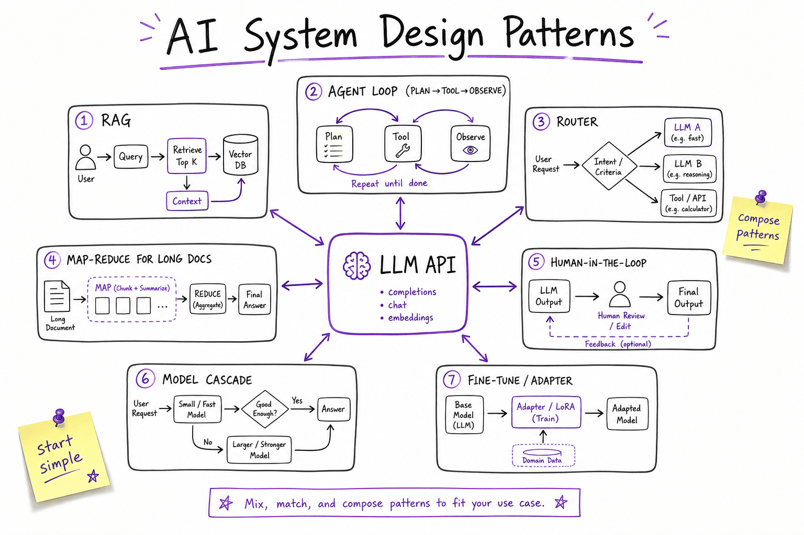
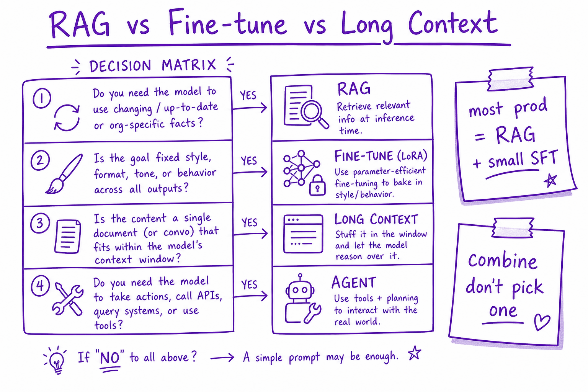
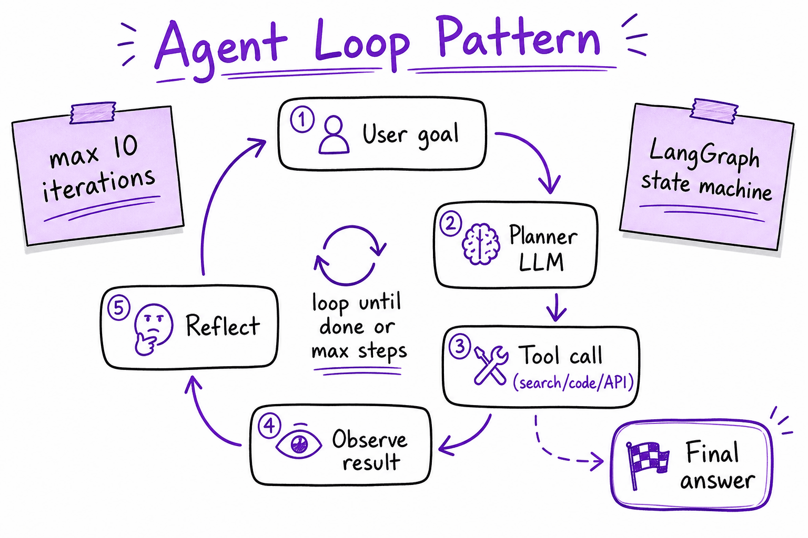

Reference architectures // Production & evals
AI system design patterns, a production agent end to end, and architectures by use case.
01 — At a glance
Reusable architecture patterns for production AI: RAG, agent loops, routers, map-reduce, human-in-the-loop, and model cascades — when to compose each.

Production AI composes patterns around the LLM primitive: retrieval for facts, agents for tools, routers for cost, map-reduce for long docs.
02 — New words
| Word | Meaning |
|---|---|
| Reference architecture | A proven arrangement of components for a class of problem, used as a starting point rather than a blueprint. |
| Contract | The agreed input and output of a component, for a model call usually a prompt template plus an output schema that code validates. |
| Workflow | A fixed sequence or graph of steps written in code, some of which call a model. The path is decided by you, not by the model. |
| Agent | A loop in which the model chooses the next step (which tool, with what arguments) until it decides it is done. |
| Router | A component, often a small model, that classifies a request and sends it to the right handler or model. |
| Map-reduce | Run the same model step on many pieces in parallel (map), then combine the results (reduce). |
| Model gateway | An internal service through which all model calls pass: provider keys, quotas, retries, fallbacks, logging and cost tracking in one place. |
| Orchestrator | The code that runs a request's steps: calls retrieval, models and tools, holds state, enforces budgets. |
| Sync / async path | Sync: the user waits and sees a streamed answer. Async: the work is queued and the user is notified when it is done. |
| Side effect | A change in the outside world (a filed claim, a sent email) as opposed to just producing text. |
| Peak factor | How much busier the busiest period is than the average. Capacity is planned for the peak. |
| Prompt caching | Reuse a stable prompt prefix → ~90% cheaper input tokens. |
The lesson
03 — The question
Every LLM system design question ("design a support assistant", "design a document-processing pipeline", "design a coding agent") is answered by composing a small number of patterns around model calls: a single call with a strict contract, retrieval, fixed workflows, routing, agents, and the operational layers that surround them. The skill being tested is not knowing the patterns' names; it is choosing the least complex combination that meets the requirements, and justifying it with numbers.
What interviewers ask:
- Given these requirements, what architecture would you build, and why not something simpler or more agentic?
- Where does knowledge come from: retrieval, a long context window, or fine-tuning?
- What surrounds the model in production, and where do state, permissions and side effects live?
- How much traffic, latency and cost does the design imply, and what changes at ten times the scale?
Running example: an expense assistant for a company of 10,000 employees. It must do three jobs: answer questions about the expense policy (a 300-page document set that changes quarterly, about 3,000 questions a day), check submitted expense reports against policy (about 1,500 reports a day, averaging 6 receipt images each), and fix or adjust claims on request ("my hotel was split across two cards, merge them", about 200 a day). Interactive use is concentrated in an 8-hour working day. Prices are illustrative: $3 and $15 per million input and output tokens for a large model, $0.25 and $1.25 for a small one.
04 — Step 1: start from the jobs, not the boxes
The most common design mistake is to start with "an agent with tools" and fit every requirement into it. Instead, describe each job along four dimensions that decide the architecture:
| Job | Knowledge | Actions | Who waits | Risk |
|---|---|---|---|---|
| Policy questions | Private, changes quarterly | Read only | A person, interactively | Wrong answer misleads; low direct harm |
| Report checks | Policy rules plus receipt contents | Read only; produces a verdict | Nobody (minutes is fine) | Wrong verdict costs money or annoys staff |
| Claim fixes | The employee's claims and cards | Writes to the finance system | A person, can wait some seconds | Wrong change moves money |
The table already decides a lot. The three jobs need three different shapes: interactive retrieval, an offline batch pipeline, and a tool-using loop with approval. Each later step picks the simplest shape for one row.
05 — Step 2: the unit, one call with a contract
The smallest reliable building block is a single model call with a contract: a fixed prompt template, an output schema, and code that validates the output and decides what happens next. Checking one receipt fits exactly:
- The model reads the receipt image and returns
{merchant, category, amount, currency, date}in a strict schema (see Structured output). - Code validates it. An unreadable amount fails validation and goes to human review instead of becoming a guess.
- Code applies the policy: the meal limit is $75, the hotel limit $250. The model never decides whether $310 is over $250.
This division, the model extracts, code decides, is the most useful single idea in LLM system design (developed in Hybrid LLM patterns). Rules in code are exact, auditable, cheap and testable; the model handles only what code cannot, which is reading messy input. Every additional responsibility you give the model is a new way to be wrong.
Because extraction from a clear receipt is easy, it can run on the small model. At about 1,200 input and 150 output tokens per receipt, that costs about $0.0005 per receipt.
06 — Step 3: adding knowledge, retrieval versus long context versus fine-tuning
Policy questions need knowledge the model does not have. Three ways to supply it:
- Put the whole policy in every prompt. 300 pages is about 150,000 tokens. At $3 per million, that is $0.45 of input per question, about $1,360 a day for 3,000 questions, and every question pays seconds of prefill latency. Prompt caching would cut the input cost by roughly 90% (to around $150 a day), but answers still have to be found in a very long context, where models are less reliable.
- Retrieve the relevant passages. Search the policy for the 6 to 8 most relevant chunks and send about 4,500 tokens: about $0.017 per question, $52 a day, with each answer citing the passages it used. This is The RAG pipeline.
- Fine-tune the model on the policy. Fine-tuning teaches style and format well and facts poorly; it cannot cite sources, and every quarterly policy change means retraining. It is the wrong tool for changing facts (see Fine-tuning, LoRA & QLoRA).
Retrieval wins on cost, freshness (re-index a changed page in minutes) and auditability (citations). Long context is a reasonable choice when the knowledge is small, or for one-off analysis of a single long document. The retrieval system brings its own design questions (chunking, hybrid search, reranking, access control), which have their own topics in the RAG section.
07 — Step 4: workflows, when the path is known
Checking a whole report is several steps whose order never changes: extract every receipt, apply the rules to each, check report-level rules (duplicate receipts, totals per trip), then write a short explanation of any violation for the employee. Because the path is known in advance, it should be written as a workflow in code, not left to a model to plan.
Two properties follow from writing it as a workflow:
- Parallelism. The six receipt extractions are independent, so they run at the same time (a map step), then the results are combined (reduce). If each extraction takes about 4 s, sequential processing takes about 24 s and parallel processing about 4 s plus the combining step.
- Batch economics. Nobody is waiting on a report check in real time, so the whole pipeline can run asynchronously: the report is accepted, queued, processed, and the employee notified. That opens up batch APIs at a discount (half price is a common illustrative figure). The 9,000 receipt extractions a day then cost about $2 a day.
Workflows are also easier to test and observe than agents: each step has a contract, an expected output and a place in a trace. Most production LLM systems are mostly workflows, with model calls at a few well-chosen steps.
08 — Step 5: routing, one front door
Employees will not choose between three tools; they will type into one chat box. A router classifies each message (policy question, report check, claim change, out of scope) and sends it to the right handler. A small model is enough: about 600 input tokens and a one-word answer, roughly $0.0002 per message.
The router is also where you can choose the model per request: a simple policy lookup may be answered well by a small model, a nuanced exception by the large one. That is a cascade, and its economics are worked through in Cost & latency.
Design for misroutes. A report check sent to the policy-answer path produces a confident but useless reply. Give each handler a way to say "this is not mine" and hand back, log misroutes, and include routing cases in the evaluation set. Ambiguous messages can be resolved by asking the user one clarifying question, which is cheaper than guessing.
09 — Step 6: agents, only where the path is unknown
"My hotel was split across two cards, merge them into one claim" cannot be written as a fixed workflow: the system must look up the claims, find the two charges, check whether they are the same stay, decide what merged claim to create, and perhaps ask the employee a question. The sequence depends on what each lookup returns. This is what an agent is for: the model chooses the next tool call, observes the result, and repeats (see The agent loop).
Agents cost more and are less predictable, and the numbers show why. Each step resends the growing conversation. With a 3,000-token starting context that grows by 1,500 tokens per step, a six-step run processes \(3{,}000 + 4{,}500 + \dots + 10{,}500 = 40{,}500\) input tokens, about $0.14 per run including output, eight times the cost of a policy answer. Latency adds up the same way: six model calls of 2 to 3 seconds each plus tool time.
So use an agent only for the job that needs one, and constrain it:
- a small tool set designed for this task (look up claims, propose a merge), with identity taken from the session, never from the model;
- a step cap and a token budget per run;
- writes that are proposed by the agent and executed by code only after the employee approves a summary rendered from the actual arguments;
- idempotency keys on every write, so a retry cannot file a claim twice (see Reliability engineering and Security & guardrails).
The ordering to remember, from simplest to most complex: single call, call plus retrieval, workflow, routed workflows, agent, multiple agents. Move up only when the job requires it. Multi-agent designs (Multi-agent systems) add coordination cost on top and are rarely the first answer.
10 — Step 7: the layers around the model
Around the patterns sit the components every production system needs. Each has its own topic; here is what each contributes to this design:
- API gateway: authentication (which employee, which region), per-user quotas, input size limits, streaming to the client.
- Model gateway: one place for provider keys, rate-limit handling, retries, fallbacks to a second provider, and per-feature cost accounting. Handlers call it instead of calling providers directly, so these policies are implemented once.
- Guardrails: input checks on chat messages; output checks that answers cite retrieved passages; policy checks on every proposed write.
- Caches: prompt caching for the stable system prompt and tool definitions; a response cache for repeated policy questions (Semantic caching).
- Observability: a trace per request across router, retrieval, model calls and tools, tagged with the release version (Observability).
- Evaluation: a test set per job (answer correctness with citations, extraction accuracy per field, agent task success) that gates every prompt, model or index change (Evaluating LLM features).
In an interview, name these layers briefly and spend your time on the one or two the requirements make critical. Here, those are permissions on writes and the accuracy of report verdicts.
11 — Step 8: state, permissions and side effects
Three questions decide whether the design is safe to run:
- Where does state live? Conversation history in a session store keyed by conversation ID; report-check jobs in a queue and a job table with status; the agent's in-progress plan in a checkpoint, so a crash in step 4 resumes rather than restarts. The model itself is stateless; everything it "remembers" is something you stored and resent.
- Who may see what? Policies differ by country and some documents are for managers only. Access control must be applied in the retrieval query, filtering chunks by the employee's attributes, before the model sees anything. Asking the model not to reveal manager-only text it has already been given is not access control.
- Who may change what? The finance system is the source of truth. The agent never writes to it directly; it proposes, the user approves, and a service that enforces the same permissions as the normal UI executes. Every write is recorded in an audit log with the conversation and trace ID.
12 — Step 9: sizing the design
Turn the requirements into load, cost and latency, because they decide quotas, budgets and whether anything needs to change:
| Part | Volume per day | Tokens per unit | Cost per day |
|---|---|---|---|
| Router (small model) | 3,200 messages | 600 in, 5 out | $0.50 |
| Policy answers (RAG, large model) | 3,000 questions | 4,500 in, 250 out | $51.75 |
| Report checks (small model, batch) | 9,000 receipts | 1,200 in, 150 out | $2.19 |
| Claim-fix agent (large model) | 200 runs | 40,500 in, 1,200 out | $27.90 |
| Total | about $82 |
About $82 a day, or roughly $2,500 a month, for 10,000 employees. Two things stand out. The agent is about 6% of interactive traffic but a third of the cost. And stuffing the policy into every prompt instead of retrieving would have multiplied the total by about seventeen.
Peak load. 3,200 interactive messages in an 8-hour day is 0.11 per second on average; with a peak factor of 3, about 0.33 per second. Policy answers then need about \(0.33 \times 4{,}500 \times 60 \approx 90{,}000\) input tokens per minute at peak, well within typical provider quotas. This system is small: no self-hosting, no special serving work, and the design effort belongs in correctness and permissions.
Latency budget for a policy answer: gateway and router about 0.4 s, retrieval with reranking about 0.3 s, model time to first token about 0.8 s, so about 1.5 s until text starts streaming, and 5 to 6 s to the end of a 250-token answer. Report checks are asynchronous and have a budget in minutes. Claim fixes stream progress ("looking up your claims...") during their 10 to 20 seconds.
13 — Step 10: what changes as it grows
Good designs say what they would change at higher scale, rather than building for it now:
- At 10 times the traffic (a 100,000-person company): around $800 a day. Response caching for repeated policy questions and a small-model-first cascade for simple ones become worth their engineering. Provider quotas need checking at peak; a second provider behind the model gateway becomes a requirement for availability.
- At 100 times: about $8,000 a day, roughly $250,000 a month, and steady, predictable traffic such as receipt extraction may be cheaper on a self-hosted open model (Serving & scaling). Fine-tuning a small model on accumulated, human-corrected extractions could replace the large model for that step.
- Whatever the scale, the evaluation set and observability matter more over time, because every one of these changes is a behaviour change that must be shown not to lower accuracy.
14 — The whole design on one page
employee ──► API gateway (auth, region, quotas, streaming)
│
▼
router (small model) ──► out of scope / clarify
┌────────┼──────────────────────────┐
▼ ▼ ▼
policy Q&A report check (async) claim fix (agent)
retrieve queue ─► map: extract each loop: tools (read claims,
(ACL filter) receipt (small model, batch) propose change), step cap
rerank ─► code applies rules ─► user approves summary
answer with ─► explain violations ─► finance API executes
citations ─► notify employee (idempotent, audited)
└────────┴──────────────┬───────────┘
▼
model gateway: keys, retries, fallback provider, cost per feature
cross-cutting: traces + release IDs, guardrails, caches, eval gates
Present it in this order in an interview: the three jobs and their four dimensions (Step 1); the simplest pattern for each and why not a more complex one (Steps 2 to 6); the sizing table (Step 9); then go deep on the riskiest part, the agent's writes and their permissions, before touching the generic layers.
15 — In code: the skeleton of the design
The three patterns in one small program: a router in front, a contract-validated extraction with policy rules in code, and a map-reduce report check. The model is stubbed so the structure runs anywhere; in production the stub is a call through the model gateway. Uses pydantic for the output contract.
from concurrent.futures import ThreadPoolExecutor from datetime import date from pydantic import BaseModel, ValidationError # ---- contracts: what each model call must return -------------------------------------------- class Receipt(BaseModel): merchant: str category: str # "meal", "hotel", "travel", "other" amount: float currency: str day: date LIMITS = {"meal": 75.0, "hotel": 250.0, "travel": 1500.0, "other": 100.0} # policy, in code # ---- stand-in for the model; in production these are API calls ------------------------------ def fake_llm(task, payload): if task == "route": text = payload.lower() return "action" if "fix" in text or "change" in text else "check" if "report" in text else "qa" if task == "extract": # pretend the model read a receipt image return payload raise ValueError(task) # ---- pattern 1: single call + schema + code decides ------------------------------------------ def check_receipt(raw): try: r = Receipt(**fake_llm("extract", raw)) except ValidationError as e: return {"status": "needs_review", "why": f"unreadable receipt ({e.error_count()} field errors)"} over = r.amount - LIMITS[r.category] return {"status": "violation" if over > 0 else "ok", "merchant": r.merchant, "over_by": max(over, 0)} # ---- pattern 2: fixed workflow, receipts checked in parallel (map), then combined (reduce) -- def check_report(receipts): with ThreadPoolExecutor(max_workers=8) as pool: results = list(pool.map(check_receipt, receipts)) return {"violations": [r for r in results if r["status"] == "violation"], "needs_review": [r for r in results if r["status"] == "needs_review"]} # ---- pattern 3: router in front of the handlers ---------------------------------------------- def handle(message, receipts=()): route = fake_llm("route", message) if route == "check": return route, check_report(receipts) if route == "qa": return route, "answer from the RAG pipeline, with citations" return route, "agent loop with tools, step cap and approval before any write" report = [ {"merchant": "Cafe Uno", "category": "meal", "amount": 42.0, "currency": "EUR", "day": "2026-10-02"}, {"merchant": "Grand Hotel", "category": "hotel", "amount": 310.0, "currency": "EUR", "day": "2026-10-02"}, {"merchant": "???", "category": "meal", "amount": "blurred", "currency": "EUR", "day": "2026-10-03"}, ] route, out = handle("Please check my October report", report) print(route, out) print(handle("What is the hotel limit in Berlin?")[0], "|", handle("Fix my claim, the hotel was split")[0]) assert out["violations"][0]["over_by"] == 60.0 and len(out["needs_review"]) == 1
The report check finds the hotel $60 over its limit and sends the blurred receipt to review rather than guessing; the other two messages route to qa and action.
The sizing from Step 9, as a calculator to rerun with your own volumes and prices:
IN, OUT = 3.00, 15.00 # $ per million tokens, large model (illustrative) S_IN, S_OUT = 0.25, 1.25 # small model BATCH = 0.5 # batch API discount factor (illustrative) def usd(tin, tout, pin=IN, pout=OUT): return (tin * pin + tout * pout) / 1e6 # 1) policy Q&A: 3,000 questions/day, RAG prompt 4,500 tokens, 250-token answers qa = 3000 * usd(4500, 250) stuffed = 3000 * usd(150_000, 250) # the whole 300-page policy in every prompt # 2) report checks: 1,500 reports x 6 receipts, small model, 1,200 in / 150 out per receipt, batch checks = 1500 * 6 * usd(1200, 150, S_IN, S_OUT) * BATCH # 3) claim fixes: 200 agent runs/day, 6 steps, context 3,000 tokens growing 1,500 per step, 200 out agent_in = sum(3000 + 1500 * s for s in range(6)) agent = 200 * usd(agent_in, 6 * 200) # router: every interactive message, small model, 600 in / 5 out router = 3200 * usd(600, 5, S_IN, S_OUT) for name, v in [("policy Q&A (RAG)", qa), (" ...if the policy were stuffed in", stuffed), ("report checks (batch)", checks), ("claim-fix agent", agent), ("router", router)]: print(f"{name:36s} ${v:8.2f}/day") print(f"total ${qa + checks + agent + router:.2f}/day; agent input tokens per run {agent_in:,}") # peak load for the interactive part: 3,200 messages in an 8-hour day, peak 3x average peak_rps = 3200 / (8 * 3600) * 3 print(f"peak {peak_rps:.2f} msg/s -> {peak_rps * 60 * 4500:,.0f} input tokens/min for Q&A at peak")
Quick reference
16 — What & Why
Interview system design for AI is composing patterns around next-token prediction — not drawing one box labeled 'GPT'. Pick RAG vs fine-tune vs agent based on requirements.
17 — Core Concepts
| Pattern | Purpose | Gotcha |
|---|---|---|
| RAG | Ground in external KB | Retrieval quality is bottleneck |
| Agent loop | Plan, tool, observe, repeat | Runaway loops without max steps |
| Router | Pick model/tool by intent | Misroute hurts quality |
| Map-reduce | Summarize long docs in chunks | Loses cross-chunk refs |
| HITL | Human approves high-risk | Latency + ops cost |
18 — API Surface
# LangGraph agent sketch
graph.add_node("plan", planner)
graph.add_node("tool", tool_executor)
graph.add_edge("plan", "tool")
graph.add_conditional_edges("tool", should_continue)19 — When to Use / When NOT
| Need | Pattern | Avoid |
|---|---|---|
| Fresh facts | RAG | Fine-tune alone |
| API actions | Agent + tools | Plain completion |
| 100-page doc | Map-reduce or RAG | Single prompt |
| Cost at scale | Router cascade | One frontier model |
20 — Architecture
Client -> API Gateway -> [Router] -> Pattern orchestrator
RAG | Agent | Map-Reduce | Direct LLM
-> Guardrails -> Response21 — Deep Dive: RAG Pattern

Decision matrix: RAG for changing facts, fine-tune for style, long context when doc fits once, agents when tools needed.
Retrieve → rerank → inject → generate → cite. See The RAG pipeline.
22 — Deep Dive: Agent Loop

Plan → tool call → observe result → reflect until done or max iterations.
State machine with max 5-10 steps. See What an agent is and LangGraph.
23 — Deep Dive: Router & Model Cascade
Intent classifier routes to specialist prompts, tools, or model tiers. See Cost & latency.
24 — Deep Dive: Map-Reduce for Long Context
Chunk document, map (summarize/extract per chunk), reduce (merge). Use when doc exceeds context and full RAG index not ready.
25 — Deep Dive: Human-in-the-Loop
Human-in-the-loop is a design pattern, not an afterthought: decide up front which outputs a person must see.
- Gate: low-confidence, regulated or irreversible outputs wait in a review queue before release.
- Sample: a small share of normal traffic is reviewed daily to catch drift the gate misses.
- Learn: approvals, edits and rejections are stored and fed back as eval cases and fine-tuning data.
In an interview, name the trigger, the reviewer's three choices, and how decisions flow back into quality. See The agent loop.
More detail
26 — A production agent, end to end
Demos are one file. Production is a system. Here's the full-stack reference architecture, the concrete decisions hiding inside every layer, two request walkthroughs (sync chat and async job), and the capacity arithmetic for a real-sized deployment.
┌──────────── CLIENTS (web / app / API) ────────────┐
└───────────────────────┬───────────────────────────┘
▼
┌──────────────────────────────── API / GATEWAY ───────────────────────────────┐
│ auth · rate-limit · request validation · streaming · per-tenant quotas │
└───────────────────────────────────┬────────────────────────────────────────────┘
▼
┌────────────────────────────── ORCHESTRATION LAYER ───────────────────────────┐
│ the agent harness: loop · planner · tool dispatch · budgets · guardrails │
│ (sync for chat · async workers + queue for long jobs) │
└───┬───────────────┬────────────────┬───────────────┬──────────────┬───────────┘
▼ ▼ ▼ ▼ ▼
┌─────────┐ ┌────────────┐ ┌────────────┐ ┌────────────┐ ┌────────────┐
│ LLM │ │ TOOLS / │ │ RETRIEVAL │ │ MEMORY │ │ STATE │
│ gateway │ │ MCP servers │ │ vector DB │ │ store │ │ store │
│ (route, │ │ (sandboxed) │ │ + rerank │ │ (sessions, │ │ (jobs, │
│ cache, │ │ │ │ │ │ long-term)│ │ checkpts) │
│ fallback)│ └────────────┘ └────────────┘ └────────────┘ └────────────┘
└─────────┘
└────────────────────────── cross-cutting ──────────────────────────────┐
OBSERVABILITY (tracing, metrics, logs) · EVALS (CI + online) · SECURITY │
· COST CONTROL (caching, routing, budgets) · PROMPT REGISTRY (versioned) │
┘
27 — Inside each layer: the decisions nobody draws
Gateway
- Streaming transport: SSE is the boring right answer for token streams; WebSockets only if the client also talks back mid-run (interrupts, HITL approvals).
- Rate limiting unit: requests/min is nearly meaningless for LLM apps — one request can cost 500 tokens or 500k. Limit on estimated tokens per tenant per minute, and enforce a per-request token ceiling at validation time.
- Timeout ownership: the gateway holds the client-facing timeout (say 60s for chat) and must be looser than the orchestrator's internal budget, or you'll kill requests that were about to finish. Timeout budgeting is worked through in Reliability engineering.
- Validation: max input length, attachment size/type, and tenant entitlements (which tools/models this plan may use) — reject here, cheaply, not three layers down.
Orchestration
- The sync/async split is THE decision. Chat: run the loop in-process, stream tokens, hard-cap at ~6–8 iterations. Jobs ("process these 400 invoices"): enqueue, return a job id, run in workers, checkpoint every step. Do not let a chat endpoint secretly become a 10-minute job — decide the cutoff (e.g. anything >30s expected) and route to the queue.
- Where budgets live: per-request token budget, iteration cap, and per-tool timeout all belong here, not scattered in tools.
- Guardrails placement: input classification before the first LLM call; output policy check before anything side-effectful or user-visible.
- Queue tech: Redis streams or SQS for fire-and-forget; Temporal (or LangGraph's persistence) when steps must survive worker death mid-job with exactly-once semantics.
LLM gateway
- Routing table, not code: map (task, tier) → model, e.g. classify/extract → small-fast model, final drafting → frontier model. This is where 40–70% of cost is won (illustrative, but consistently the biggest lever).
- Caching: provider-side prompt caching for the static system prompt + tool specs (often 60–90% of input tokens in an agent loop are repeated prefix); optional response cache keyed on normalized input for idempotent read-only asks.
- Fallback chain: primary model → same model other region → different provider equivalent. Keep the chain short; each hop adds worst-case latency.
- Key management: per-service keys, per-tenant metering, kill-switch per key.
Tools / MCP servers
- Blast-radius classes: read-only (parallelize freely), side-effectful (idempotency keys — Reliability engineering), and destructive (HITL approval, always).
- Sandboxing: code execution and file handling in containers with no default network egress; an agent that can browse AND execute is a data-exfiltration kit unless egress is allowlisted.
- Output caps: every tool result truncated/summarized to a max size before it re-enters the context — one 300kB JSON blob can silently double a request's cost.
Retrieval
- Vector DB choice is mostly ops (pgvector if you already run Postgres and corpus < ~10M chunks; dedicated engine beyond). Rerankers pay for themselves at the top-k → top-n squeeze (Tools & agents). Index freshness pipeline is a batch job with its own alerting — stale indexes fail silently.
Memory & state
- Session memory (this conversation): Redis with TTL, or Postgres if you want it queryable. Long-term memory (across sessions): extracted facts in Postgres + embeddings for recall, written by an async summarizer, never inline on the hot path. Job state: the checkpoint table — run id, step index, messages snapshot, status — the thing that makes "resume" possible.
28 — Walkthrough 1: sync chat request
CLIENT GATEWAY ORCHESTRATOR LLM GW TOOLS STORES │ POST /chat │ │ │ │ │ ├────────────>│ auth+quota ok │ │ │ │ │ ├───────────────>│ load session ──┼─────────────┼───────────>│ Redis: 12 msgs │ │ │ guardrail(in) │ │ │ │ │ ├── call #1 ────>│ route: fast │ │ │ │ │<─ tool_call ───┤ (cached px) │ │ │ │ ├── get_order ───┼────────────>│ 180ms │ │ │ ├── call #2 ────>│ │ │ │ SSE tokens │<═══════════════╡<═ stream ══════╡ │ │ │<════════════╡ │ guardrail(out) │ │ │ │ │ │ save session ──┼─────────────┼───────────>│ Redis │ │ │ emit trace ────┼─────────────┼───────────>│ OTel done: ~4.1s │ │ │ │ │
Points to notice: the session load and input guardrail happen before any model call; the second LLM call streams straight through gateway to client (don't buffer the whole answer); the trace emit is fire-and-forget so observability never adds user-visible latency. Two LLM calls + one tool is the modal shape of a healthy chat turn — if your median turn is six calls, look at your tool design first (Voice agents).
29 — Walkthrough 2: async job
CLIENT GATEWAY QUEUE WORKER LLM GW / TOOLS STATE STORE
│ POST /jobs │ │ │ │ │
├─────────────>│ validate │ │ │ │
│ 202 {job_id} │ enqueue ─>│ │ │ │
│<─────────────┤ ├─ claim ─>│ step 1: plan ────>│ │
│ │ │ │ checkpoint(1) ────┼───────────────>│
│ GET /jobs/id │ │ │ step 2..7: loop ─>│ (tools, LLM) │
├─────────────>│ read ─────┼──────────┼───────────────────┼───────────────>│ status: running, 4/7
│<─ progress ──┤ │ │ ✂ WORKER DIES at step 5 │
│ │ ├ redeliver│ (visibility timeout expires) │
│ │ ├─ claim ─>│ NEW worker: load checkpoint(4) ───>│
│ │ │ │ resume step 5..7 ─>│ │
│ webhook/poll │ │ │ status: done ──────┼──────────────>│
│<── result ───┤ │ │ │ │
The two properties doing all the work: checkpoint after every completed step (so redelivery resumes instead of restarting — and side-effectful steps must be idempotent, the next topic), and status readable out-of-band (client polls or gets a webhook; never holds a connection open for minutes). If a job is redelivered more than N times, park it in a dead-letter queue with its trace id — a human debugs it from the trace, not from logs archaeology.
30 — Capacity estimation: the example system, sized
Assume (all illustrative): a support agent, 50k conversations/day, 6 turns each, peak factor 3× over the daily average, mean 2.2 LLM calls + 1.4 tool calls per turn, mean 7k input + 400 output tokens per LLM call.
- Turn rate: 50k conv × 6 turns = 300k turns/day ≈ 3.5 turns/s average → ~10.5 turns/s peak.
- LLM call rate: 10.5 × 2.2 ≈ 23 calls/s peak. Check your provider rate limits against this with headroom for retries (+30% → plan for ~30 calls/s).
- Token throughput: 23 calls/s × 7.4k tokens ≈ 170k tokens/s peak through the LLM gateway. If provider limits are per-minute: ~10.2M tokens/min — this is the number that decides whether you need multiple keys/regions.
- Daily token bill: 300k turns × 2.2 calls × (7,000 in + 400 out) = 4.62B in + 264M out per day. At (assume) $1/Mtok in, $5/Mtok out: ~$4.6k + $1.3k ≈ $5.9k/day. Now apply prompt caching to the ~70% repeated prefix at (assume) 10× cheaper cached reads: input cost falls to ~0.3·$4.6k + 0.7·$0.46k ≈ $1.7k → ~$3.0k/day total. Caching just paid an engineer's salary.
- Orchestrator workers (sync): a turn holds a worker slot ~4s (mostly awaiting the LLM). 10.5 turns/s × 4s ≈ 42 concurrent turns. Async-IO servers handle this in one process; if you're on a thread-per-request stack, that's 42+ threads just waiting — use async.
- Vector DB: 300k turns × 40% RAG turns × 1 search = 120k queries/day ≈ 4 QPS peak-adjusted ~12 QPS — trivial; sizing is about index RAM (10M chunks × 1536 dims × 4B ≈ 61GB raw, ~15GB with int8 quantization + HNSW overhead).
- Session store: 50k conv × ~40kB history ≈ 2GB live in Redis with 24h TTL — one small node, replicated.
Do this arithmetic before launch. Every number above takes five minutes with real traffic assumptions, and each one maps to a concrete purchase or limit request.
| Layer | Responsibility | Typical tech |
|---|---|---|
| Gateway | auth, rate-limit, validate, stream | API gateway, your web framework |
| Orchestration | the agent loop, tool dispatch, budgets | your harness / LangGraph / Temporal for long jobs |
| LLM gateway | route to models, cache, fallback, key mgmt | LiteLLM, a router, provider SDKs |
| Tools / MCP | actions, sandboxed execution | MCP servers, containers, function services |
| Retrieval | RAG: vector search + rerank | Qdrant/pgvector + reranker |
| Memory / state | sessions, long-term memory, checkpoints | Redis, Postgres, vector store |
| Cross-cutting | observability, evals, security, cost, prompts | Langfuse/LangSmith, eval suite, MLflow |
Where reference architectures go wrong in practice
Building all of it on day one. A team of three shipping v1 needs the gateway, a harness, one model, and tracing — not seven boxes. Add the LLM gateway when you have two models, the queue when you have a >30s job, long-term memory when users notice its absence. The opposite failure: shipping chat-only architecture, then bolting a 10-minute job onto the sync path — you'll discover load-balancer idle timeouts, duplicated side effects on client retry, and zero resumability, all in production. The sync/async decision is the one you can't retrofit cheaply; make it consciously.Takeaway
The diagram is standard; the engineering is in the decisions inside each box — token-based rate limits, the sync/async cutoff, the routing table, blast-radius classes for tools, checkpoint-per-step. And the whole thing is sizeable on one page of arithmetic: peak calls/s, tokens/min, and $/day fall straight out of five traffic assumptions.Exercises
- Redo the capacity arithmetic for your own product assumptions (or invent: 5k users, 3 conv/user/day). Produce: peak LLM calls/s, tokens/min, $/day with and without prompt caching.
- Draw the sync-chat sequence for YOUR stack, marking where each timeout lives (client, gateway, orchestrator, provider call, tool). Find the layer whose timeout is currently shorter than the ones beneath it.
- Implement the job-state table (run id, step, messages snapshot, status, attempt count) and a worker that resumes from the last checkpoint after a
kill -9. Verify no step executes twice by logging side effects. - Classify every tool in one of your agents into read-only / side-effectful / destructive. Write the one-line policy each class gets (parallelism, idempotency key, HITL).
- Take your last month's real traffic and compute what fraction of input tokens were a repeated prefix (system prompt + tool specs). Estimate the caching savings at your provider's published cached-token discount.
31 — Reference architectures by use case
How the pieces actually assemble for common products.
Everything in Fine-tuning & alignment, Inference & serving, Voice agents, Agent frameworks, Production & evals — RAG, agents, evals, guardrails, serving — was presented as separate machinery. This topic assembles it four times, for the four products most teams actually build. For each: the architecture, the three hardest design decisions you'll face (with the reasoning, not just the verdict), what the eval set looks like, and the dominant cost and failure mode — because knowing where a system bleeds money and where it breaks is most of what "experience with this architecture" means.
32 — Customer-support agent
Routing (classify intent) → RAG over help docs + tools (order lookup, refund) → guardrails (human gate on refunds) → escalate to human on low confidence. Mostly a workflow with a small tool-using agent inside.
user msg ──> ┌──────────┐ simple/FAQ ┌─────────────────────────┐
│ intent ├─────────────>│ RAG answer (cheap model) │──> cite + reply
│ router │ └─────────────────────────┘
│ (cheap) │ account/action │ low conf / no docs
└────┬─────┘ ▼
│ complex ┌──────────────────────────┐
└────────────────> │ tool agent (strong model) │
│ order_lookup (read) │
│ refund(≤$X)──>[HUMAN GATE]│
└────────────┬─────────────┘
conversation state (Redis/PG) <────────────── │ conf < τ, anger, policy edge
audit log of every tool call ▼
human agent handoff
(with full transcript + agent's notes)
| Hard decision | The reasoning |
|---|---|
| 1. Where does automation stop? | The naive target is "resolve everything." The right target is resolve the cheap 60–70% perfectly and hand off the rest fast. A wrong answer to "where's my order" is annoying; a wrong answer about a billing dispute creates a second ticket plus a trust dent — negative resolution. Draw the line by cost-of-error per intent, not by what the model can usually manage; encode it in the router, not in prompt vibes. |
| 2. Escalate on what signal? | Self-reported confidence ("how sure are you, 1–10?") is poorly calibrated. Use behavioral signals: retrieval score below threshold, no citation resolving to a real doc, user repeating themselves or expressing frustration (a tiny sentiment classifier), or the agent looping. Tune τ on labeled transcripts; every false non-escalation in prod becomes an eval case. |
| 3. Refunds: agent tool or human workflow? | Middle ground wins: the agent can propose a refund with amount and rationale; amounts under $X auto-approve against a per-customer and per-day cap, everything else queues for one-click human approval. Caps are enforced in the tool layer (Security & guardrails), so a manipulated agent still can't exceed them. Pure-human refunds waste the automation; pure-agent refunds fail your first prompt-injection audit. |
Eval set: 300–1,000 real (redacted) transcripts labeled with intent, correct resolution, and should-have-escalated; per-intent slices so a regression in "cancellations" can't hide inside a good average; an adversarial slice (injection attempts, refund fishing, abusive users); graders = exact-match on tool calls + LLM judge on answer correctness against the retrieved doc. Gate: resolution ≥ baseline AND false-non-escalation ≤ baseline. Dominant cost: input tokens from re-sent conversation + RAG context every turn — prompt caching and tight retrieval are the levers. Dominant failure: confidently wrong answers from stale help docs — the index lags a policy change and the bot cites yesterday's truth (this is a freshness monitoring problem, MLOps & drift, as much as a RAG problem).
33 — Coding agent
Single coherent agent (avoid context fragmentation) in a sandbox with file + bash + test tools. Generate → run tests → read failures → fix loop (evaluator-optimizer). Checkpointed for long tasks; strict tool permissions.
task/issue ──> ┌────────────────────────────────────────────┐
│ agent loop (strong model, one context) │
│ plan → edit files → run tests → read │
│ failures → fix → repeat (cap: N steps) │
└──────┬─────────────────────────────────────┘
│ tools, ALL inside:
┌──────▼──────────────────────────────┐
│ SANDBOX (container per task) │
│ fs: repo checkout, size-capped │
│ bash: no network egress* │ *allow-list: package
│ test runner: timeout per run │ registry proxy only
└──────┬──────────────────────────────┘
│ checkpoints (job store) diff + test log
▼ ▼
resume on crash PR for HUMAN REVIEW ── merge gate:
CI + review, never auto-merge
| Hard decision | The reasoning |
|---|---|
| 1. One agent or planner + sub-agents? | Sub-agents look attractive (parallel files!) but coding state is coupled: the fix in api.py changes what the test in test_api.py should assert. Splitting context means each worker re-discovers or misses the others' decisions — you trade context-window pressure for coordination failures, and coordination failures are worse. Stay single-agent; fight context bloat with compaction and by letting the agent take notes to a scratchpad file instead of re-reading everything. Multi-agent earns its cost only for genuinely separable work (a monorepo-wide mechanical migration). |
| 2. What's the feedback signal? | The loop is only as good as its verifier. Tests passing is necessary, nowhere near sufficient — the classic failure is the agent editing the test or special-casing the failing input. Rank signals: compile/type-check (cheap, reliable) → existing tests (must not be writable by the agent for bug-fix tasks — mount them read-only) → new tests (agent-written, human-reviewed) → lint/static analysis. Deciding which files are agent-writable is a real design decision with quality consequences. |
| 3. How much autonomy per run? | Long leashes (50+ steps) raise completion rate on hard tasks and also raise the cost of a doomed run — an agent stuck at step 12 usually stays stuck through step 50, burning tokens on increasingly desperate edits. Cap at the knee of your completion-vs-steps curve (often 15–25 illustratively), detect no-progress (same test failures two iterations running → stop and report) rather than only counting steps, and checkpoint so a human can unstick and resume instead of restarting. |
Eval set: SWE-bench-style — real issues from your repos with golden patches and held-out tests; graded by test pass after applying the agent's diff, plus a judge pass for diff quality (minimal? idiomatic?); slices by task type (bug fix / feature / refactor) and repo size. Beware training contamination on public benchmark repos — private tasks are your ground truth. Gate: resolved-rate and cost-per-resolved. Dominant cost: tokens — file contents and test logs are huge; a single hard task can run tens of millions of input tokens without caching and log truncation. Dominant failure: reward hacking the verifier (editing tests, hardcoding expected outputs) — which is why the merge gate is human review + CI on read-only tests, never the agent's own claim of success.
34 — Deep-research agent
Orchestrator → parallel sub-agents, each researching a sub-question in its own context, returning distilled findings → synthesis. The multi-agent sweet spot (read-heavy, parallel). Heavy token cost; cache + budget aggressively.
query ──> ┌─────────────┐ decompose ┌──────────────┐
│ orchestrator ├───────────>│ sub-question │ × 3–8, PARALLEL
│ (strong) │ │ workers │ each: own context,
└──────┬──────┘ │ search+fetch │ own token budget,
│ findings (distilled│ read → distill│ step cap
│ ~1–2k tok each, └──────┬───────┘
│ with source URLs) │
▼ │ gaps found?
┌─────────────┐ spawn round 2 ◄──┘ (bounded: ≤2 rounds)
│ synthesis │
│ (strong) ├──> report + citations ──> citation VERIFIER
└─────────────┘ (do quotes exist at the URL?)
| Hard decision | The reasoning |
|---|---|
| 1. What crosses the context boundary? | Sub-agents reading full pages and returning full pages defeats the architecture — synthesis drowns and you pay for everything twice. Sub-agents must return distilled findings: claims + supporting quotes + URLs + a confidence note, budgeted (~1–2k tokens each). But distill too hard and synthesis can't detect contradictions between sources. The interface contract for that findings format is the single highest-leverage prompt in the system — version it and eval it on its own. |
| 2. Static decomposition or dynamic spawning? | Letting workers spawn workers ("this sub-question has three sub-sub-questions…") is elegant and unboundedly expensive — the failure mode is a token bomb, not a wrong answer. Fixed two-phase (decompose → research → identify gaps → one bounded round 2) captures most of the quality at a predictable cost. Full recursion needs a global token budget enforced by the orchestrator, and you'll still be surprised. |
| 3. How do you keep citations honest? | Synthesis writes prose from findings it half-remembers; citation drift (right claim, wrong source; or a "quote" that appears nowhere) is endemic. Make workers pass verbatim quotes with URLs, make synthesis cite only from that findings set, and run a mechanical verifier that re-fetches and string-matches every quoted span before delivery. Failed citations get dropped or flagged — never silently kept. This one check moves user trust more than any prompt improvement. |
Eval set: 50–150 research questions with rubric-graded reports (coverage of known key facts, factual accuracy, citation validity, contradiction handling — a few seeded questions where good sources genuinely disagree); LLM-judge scoring against per-question rubrics, plus the mechanical citation-verifier pass rate; slices by domain and by "answer exists on one page" vs "requires synthesis." Dominant cost: tokens, decisively — a single query can burn ~15× a chat interaction (illustrative); parallel workers multiply everything, so per-worker budgets and prompt caching on shared prefixes are load-bearing, and a per-query cost ceiling is a product decision, not an afterthought. Dominant failure: confident synthesis over thin or contradictory evidence — the report reads authoritative regardless of input quality, which is precisely why the rubric grades evidence handling, not fluency.
35 — RAG knowledge chatbot
Ingestion pipeline (chunk→embed→index) + query path (rewrite→hybrid retrieve→rerank→grounded generate→cite). Often not an agent — a well-built RAG workflow is enough.
OFFLINE (ingestion) ONLINE (query path)
docs ─> parse ─> chunk ─> embed ─┐ query ─> rewrite (cheap LLM)
│ ▼ │
└─> metadata vector index ├─> BM25 ──┐ RRF
(ACLs, dates) + BM25 index └─> vector ┘ merge ─> rerank
│ │ top 4–6
change feed ─> incremental re-index ▼
(freshness SLA: e.g. <1h) grounded generate + cite
│ "I don't know" if retrieval
▼ score < floor (refusal path)
answer + source links
| Hard decision | The reasoning |
|---|---|
| 1. Where does quality actually come from? | Teams reach for a better generator model when answers are bad; measured, the bottleneck is retrieval most of the time — the right chunk never made it into context, and no generator fixes that. Spend in order: parsing/chunking quality (garbage chunks poison everything downstream) → hybrid retrieval + reranker → query rewriting → then the generator. Requires measuring retrieval (recall@k on a labeled set, Fine-tuning & alignment) separately from generation, or you'll optimize the wrong stage for a quarter. |
| 2. ACLs: filter where? | Post-retrieval filtering leaks: scores, snippets in logs, "based on 3 documents you can't see" — and one bug ships a salary doc to the whole company. Permissions must be a pre-filter in the index query (metadata filter / row-level security), enforced by the retrieval service with the user's identity, not the app's service account. This constrains your vector-store choice early — verify filtered-query performance at your scale before committing, because bolting ACLs on later is a re-architecture. |
| 3. What happens on retrieval miss? | The single biggest trust decision: when nothing good is retrieved, does the bot improvise from parametric memory or say "I don't know, here's who to ask"? Improvised answers score fine on happy-path evals and destroy trust in the tail — one confident fabrication about a leave policy undoes fifty good answers. Set a retrieval-score floor with an explicit refusal path, measure the false-refusal rate so you don't overcorrect into uselessness, and route refusals to a human channel so they're a feature, not a dead end. |
Eval set: two layers, always. Retrieval: 200–500 query→relevant-chunk labels, recall@k and MRR, re-run on every chunker/embedder/index change. End-to-end: question→grounded-answer pairs judged for faithfulness-to-sources and completeness, plus an unanswerable slice (questions the corpus can't answer — the bot must refuse) and a permissions slice (user A asking about user-B-only content). Dominant cost: usually the cheapest architecture here — per-query cost is one or two small calls plus retrieval; the sneaky costs are re-embedding the corpus on model/chunker changes (budget it per million chunks before choosing an embedding model) and the reranker at high QPS. Dominant failure: ungrounded answers — retrieval returns something plausible-but-wrong or stale, generation smooths over it, the citation points at a doc that doesn't quite say that. Faithfulness evals plus the refusal path are the countermeasures.
In production
37 — Production & Ops
- Start simplest pattern that meets requirements
- Observability per pattern stage
- Feature flags to swap patterns
- Golden eval per pattern change
39 — Where people get lost
- Agent when single RAG call suffices
- Map-reduce losing global context
- No max steps on agent loops
- Over-engineering before baseline eval
- Mixing patterns without clear ownership
- "Make it an agent." Most jobs have a known path and should be workflows: cheaper, faster, testable. Reserve agents for the parts whose steps depend on what lookups return.
- Letting the model apply business rules. Limits, eligibility and arithmetic belong in code. The model extracts and explains; code decides.
- Fine-tuning to add knowledge. It is poor at facts, cannot cite, and must be redone when facts change. Retrieve changing facts.
- Access control in the prompt. Filter documents and tool results by the user's permissions before the model sees them.
- Making everything synchronous. If nobody is waiting, queue it: batch discounts, retries without user-visible latency, smoother load.
- Drawing boxes without numbers. Volume, tokens per request, peak factor, cost per day and a latency budget turn a diagram into a design, and often show which part deserves the effort.
- Building for 100 times the scale on day one. State what you would change at higher scale; build what today's numbers need.
40 — How this connects
Builds on
- Limits & hallucination — What LLMs get wrong by design, grounding and abstention, and how to design around it.
- Structured output — JSON mode, schemas, constrained decoding, validation and repair.
- The RAG pipeline — Retrieve, augment, generate: every stage from a question to a grounded, cited answer.
- Making RAG good & measuring it — Advanced RAG, a production RAG chatbot design, retrieval and answer metrics, freshness, ACLs, latency, injection.
- What an agent is — Agents vs agentic AI, what makes something an agent, workflows vs agents, and agent architectures.
- The agent loop — The loop in depth and in code: budgets, errors, human approval, reliability, safety, and how to evaluate an agent.
Where this shows up later
- Cost & latency — Where the money and the milliseconds go: pricing, prefill vs decode, routing, batching and prompt caching.
- CrewAI — Role-based multi-agent crews: agents, tasks, processes.
- Complete build: spec & architecture — The system we build end to end: requirements, architecture and decisions.